What
Last time we designed a camera-based solution to the problem of mapping floor height. This time, with the help of sponsorship from PCBWay, we will design an elecronic target board. The target board can convert the height of the laser line directly to digital readings and send them to a computer over serial communication.
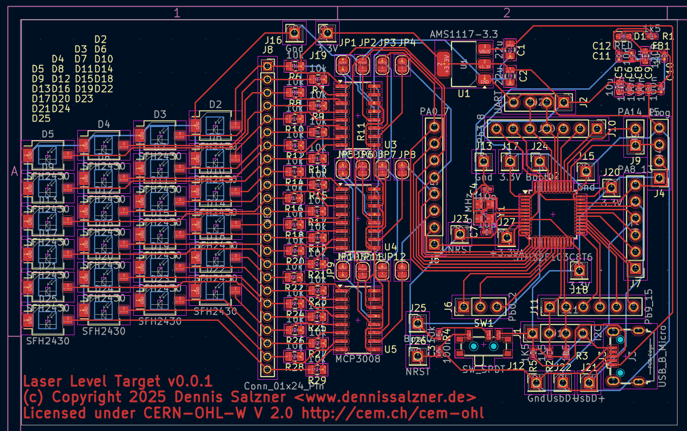
Contents
Contents
When
Recently I was approached by a PCB manufacturer from Shenzhen, China. They found my blog and offered to sponsor a project. With this sponsorship, we can take the project up a notch and design an electronic target board in order to fully automate the digitization of the laser line height.
Background
Background
In order to pour leveling compound more strategically during my renovations, I needed a way of creating a two dimensional map of the floor height (see part 1 introduction). This was solved by a camera-based method. It uses two cameras, one to cover the position in the room and one to record a laser line on a ruler (see part 2 camera-based solution). However the method is still tedious. An electronic target board that outputs the height values via serial communication would make the process much more efficient.
Sponsorship
When PCBWay approached me for sponsorship I researched the company and found that they offer PCB manufacturing services and sponsor “45.000 hobbyists all over the world”. I can say already that I’ve received the boards and that the experience was pleasant. There were also almost no strings attached: I merely promised to promote them on a series of posts regarding this project.
So what is the gain for me?
- they cover the costs of PCB production and even assembly
- mention on PCBWay’s webseite means publicity
- the project becomes easier to replicate for my readers as PCBWay has the design files
- I will have learned how to use their service for similar projects in the future.
- it motivates me to design and complete this project on a more professional level
What do they gain by supporting hobbyists?
- they receive referal from hobbysits mentioning them in their projects
- the customer feedback they receive from sponsored projects is typically more favourable
- others are more likely to order the same PCBs when reproducing the projects. PCBWay gains customers and saves time in manufacturing, because they’ve been through the process with that exact design.
- PCBWay can improve their production capabilities and processes and align more closely with their customer base
- they gain access to the designs, could theoretically sell them directly or via sub-contractors themselves
- the early rapid expansion helps them establish a strong foothold in the market, as engineers learn how to use their services and are more likely to come back
As for this project
- an electronic target board will allow me to measure floor height more efficiently
- I’ve designed the board to use the popular stm32f103 micro-controller in a “bluepill” style configuration. I’ve tried this in the past for anther project (see lqfp48 and AtariStMegaAcsiSdCard))
- and I’ve designed the PCB in sections in other to be able to test and use each section individually also for other projects.
Due to the nature of the sponsoring some of my design constraints were:
- build something not too trivial and novel, but that fits into the 61.5 x 99.5 mm size constraint
- use only two layers so that I can reach both sides with the soldering iron, can cut traces and add jumper wires, if needed
- keep the board in sections with pins easily accessible
- design the board in sections so that each section can be tested and used individually. This way we can use early prototype board and hack them to be useful after production, even if they only partially work.
- use SMD components in order to use the limited space effectively and because though-hole is an issue in PCB production, but smd is where it excels.
- something that I can open-source and don’t mind giving the design files away
- that can be of use to others
- and that will work in a reasonable amount of time with out causing too much work on my end
The last point, the amount of work involved, was particularly important, as I have many things going on at the moment. Some years ago I had written about etching custom PCBs at home (see PCB etching)). Back then I had intended not to go down that route anymore and rather design my hobbyist projects to use off-the-shelf hobbyist microcontroller and power boards, hot-glueing and hot-wiring them instead of going through all the work of PCB production.
The sponsorship along a suitable project idea and previous experience with custom PCBs gave me the motivation to follow through and try modern PCB production. A lot of the process was streamlined, software has improved and the process became less-expensive since I was etching my own boards.
Challenges with the camera-based approach
With the camera-based method I was able to completly achieve the goals I had, but there are drawbacks:
- I choose smartphones over webcams and industrial cameras, as they are more practical in this project, but they also make image quality hard to control.
- we needed to synchronize the two video feeds, which is either manual labour or requires software. Either way it is an additional step.
- during recordings cameras often slipped which would lead for important areas not being in frame
- lighting, auto-focus and white-balance was consistantly an issue.
- the setup is also somewhat tedious
- and we had to go great lengths to automatically digitize the readings, that is get x,y,z (z=height) coordinates from the material
Other Options
The biggest issue with the camera-based approach was getting accurate readings of the laser line height. I researched online extensively for equipment that can provide digital readings of laser line height.
What I found were three types of “laser target boards”:
- a) simple reflective surfaces that make visually reading the height easier
- b) devices that reflect laser light perpendicular and use a single photodiode to only signal highest intensity when the target is centered
- c) or extremly expensive “laser targets” typically containing photo diode arrays that are expensive and difficult to find.
Option a) is what we already have with the non-reflective ruler I’m using. b) is not of much value as it would require mechanically moving the target board up and down, and then use a distance measure when it’s at the right value c) is close to what I need, but expensive and specialized.
In the end I ended up building my own make-shift “photo diode array” by adding a 24 automotive light sensors in a grid configuration and reading them with three 8-channel analog-digital converter chips
Market Analysis
Expensive and proprietary equipment for measing the height of a line laser does exist. As do cheap laser targets that only signal the presense of the laser line close to center of the board.
Inexpensive consumer grade laser targets
The inexpensive “Laser Targets” or “Laser Receivers” give an acoustic sound and can be bought for around 40 Eur.
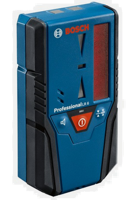
My first throught was to just record the audio output of such a device and analyse the frequency.
But then I looked further into how they work. Behind the “sensing window” these cheap laser targets contain a “light tube” that directs incoming laser light onto a single photodiode [2].
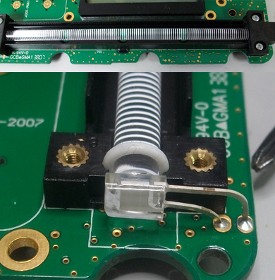
(Image taken from [2])
The tube is constructed such that the intensity of the light that reaches the photodiode varys with distance to the center of the tube.
Thus, unfortunately, these devices don’t yield information to which side the laser line line is offset from center.
We could theoretically place the target board such that the laser line reaches only only half of the tube and cover the other half of the tube, but then the sensing windows would be very small.
I’ve also thought about using two or more such tubes offset to one another.
Professional grade laser targets
There are also more expensive devices that display the offset in millimeters. These cost upwards of 250 Eur.
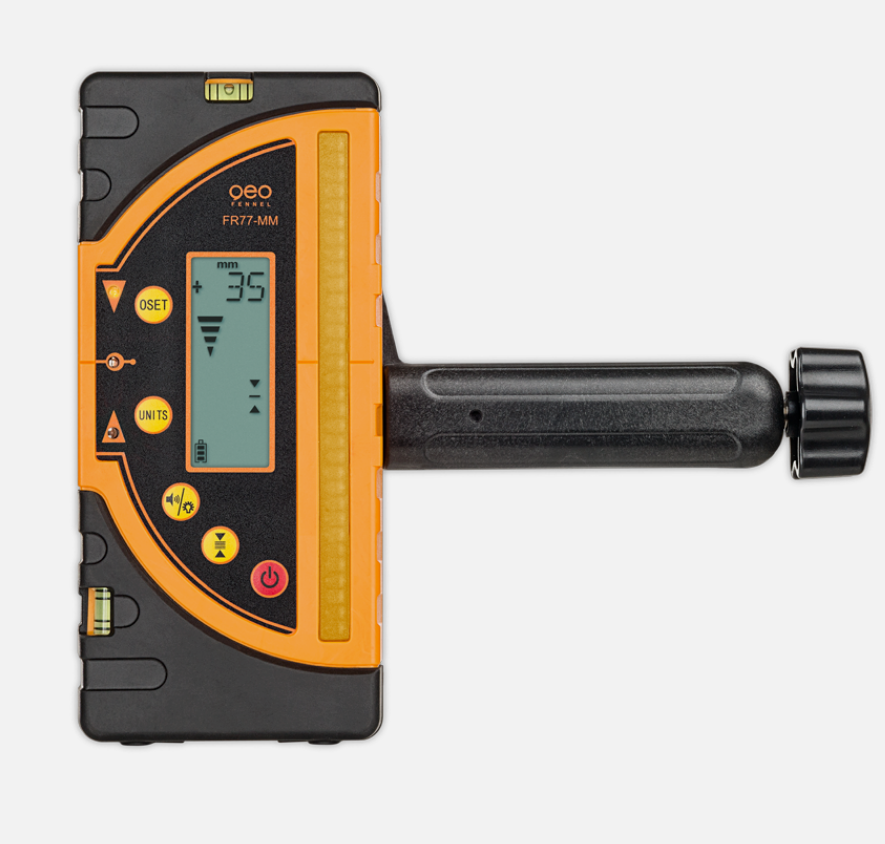
Some can transfer the height measurements via bluetooth, but they cost even more.
How
Hardware Considerations
We need to first make some concious decisions on the parts we want to use for the board. They have to be suitable, available and afforable.
Positional Information
The electronic laser target is one part of the project. It will yield measurement values of the laser height. For positional information of where in the room the laser target is located, we can use the 360 degree Lidar and SLAM algorithms (see my previous posts on Lidar). This in turn requires wheel odometry (see my previous posts on Wheel Odometry).
Both the height and positional information would be evaluated in software. Either on a powerful micro controller or transferred to a PC running SLAM in the robotics operating system (ROS), smartphone App via serial connection (RS232) or bluetooth.
I intend to use my “WayPonDEV LD14P” 360 Degree Lidar. Accuracy is not too much of a concern here. I know I can run it in ROS (see Lidar in ROS).
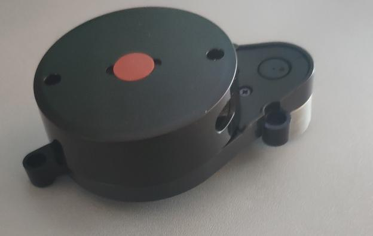
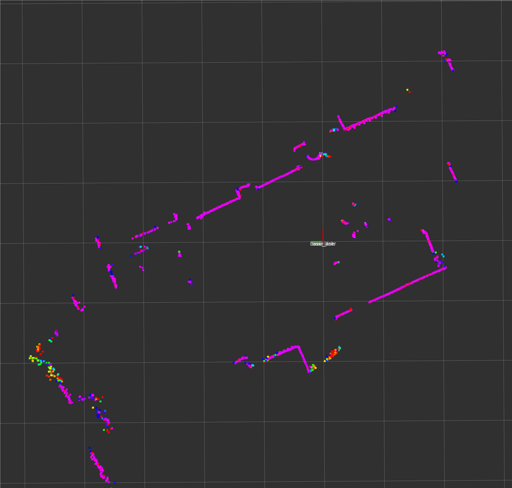

But for now let’s focus on the electronic laser target.
Design Goals
I’ve designed some design goals for this project.
Testing and Reusablility
As mentioned above I intend to keep design the board in reusable and easily testable sections. Each section can be used individually. Between each sections will be easily accessable pin headers. This way boards can be cut and hot-wired during testing and also for other projects in the future.
Iterative improvements, Agile Design
With hardware designs such as this one it is safe to assume that the first iteration will almost certainly contain errors.
This is why I’ve structured the board in three sections, as mentioned above, in order to be able to debug and/or use each section individually.
Additionally I’ve added lots of pin headers to the design so that I can add jumper wires where I need them.
Usage Levels
For this design I came up with what I call “levels of usage”. Depending on what works and what doesn’t the early board revisions will be somewhat usable.
Level 0 - sections can be used individually
In this case I can
- cut the board into three halves: the micro controller circuit, analog digital circuit, the photo diode array
- then test each individually, add jumper wires where necessary and bodge the board to be usable
- use it to learn from mistakes for future revisions
Level 1 - computer and alternative micro controller with webcam
If the photo diode array and analog digital circuit work, but the micro controller does not, we can replace the micro controller with a hand soldered auxiliary board with serial connection to get the measurements into a computer.
- connect a separate micro controller hand soldered board containing an ATmega8 or similar
- it can be connected to the SPI connections of the analog digital converters.
- this can be used to test the two of the three sections of the board
- the hand soldered board can be connected to a computer via serial connection
This would already be usable for measuring floor height, as I can get the height readings in into a laptop computer via serial connection. The software side could run on the computer.
A webcam, also connected to the laptop, could record my position in the room similar to the camera-based method (see my previous post). To automatically gather the data without manual steps an April tag could be printed onto the rig in order to automatically track position in the room from the video.
Level 2 - computer and alternative micro controller with lidar
The webcam can in Level 1 can replaced with the 360 degree Lidar, also connected to the computer, with the software running on the computer. The robotic operating system (ROS) could be used. The computer can produce the 2D map with height information.
Level 3 - board works with computer
If all sections of the board work we won’t need the auxiliary micro controller board and can directly transfer measurements to a computer as in levels 1 and 2.
Level 4 - all computation on the board
Once the entire board works, the Lidar data cane be read by the stm32f103 and mapping is computed directly on the micro controller we will have reached the full build.
Measusing Green Laser Light
There are few options to measure laser light.
- inexpensive consumer grade laser targets. These unfortunately use light tubes and single photo diodes inside that we can’t easily reuse for our purposes.
- I2C Ambient Light sensors as used in smart home devices that contain a photo diode and digitization circuitry in one package. However they generally don’t have peak sensitivity at the wavelength I need.
- Linear Photo diodes or photo diode arrays would be perfect. Large ones are prohibitively expensive for a hobbyist project.
- CMOS sensors from cameras are not suited for the purpose due to size and builtin color filtering.
I2C Ambient Light sensors
My first thought was to use I2C ambient light sensors like those found in smart home appliances. They contain a photodiode and the circuitry to digitize the result and make it available on an I2C bus.
These chips could be used to pickup the laser line. Placing them in an array or grid would allow reading values along a line. A microcontroller could then compute the laser line height.
The Everlight ALS-DPDIC17-78C costs roughly 1 Eur at a German electronics online store. The chip is 2 by 2 mm in size and could be positioned in two or more columns on a PCB. Each column could be shifted to the one before it in order to capture with sub-millimeter performance.
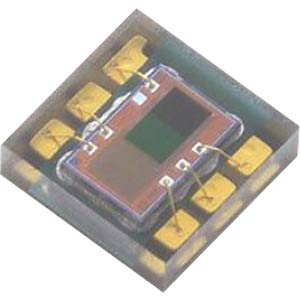
CMOS
We could use a CMOS camera sensor without a lense and point it directly at the laser. I don’t know if that would damage the sensor. Consumer CMOS sensors are coated with colors in order to pickup red, blue and green. Additionally we need a sensing window of two or three centimeters and CMOS sensors are typically smaller. This would not be suitable.
Linear Photodiodes
Another option could be “linear photo-diodes” or “photo-diode arrays” [3].
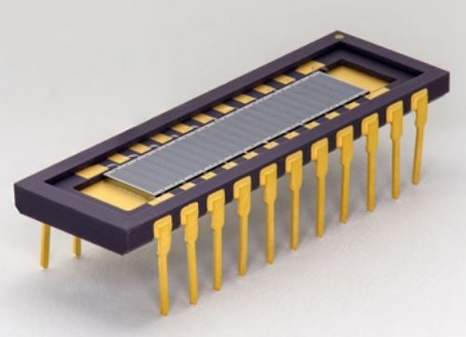
Interestingly such linear photo diodes in a grid is what make up CMOS sensors in modern digital cameras.
Custom Photodiode Array
As linear photo-diodes are somewhat rare and expensive, I2C ambient light sensors seem a little too much for such a project, I’d probably have to design a custom board that holds multiple photo diodes in an array that array connected to a micro-controller to get the intensity readings.
Green lasers typically emit “wavelengths of 505 nm, 510 nm, 514.5 nm and 520 nm” [4]. So we need photo diodes that cover that range.
Vishay seems to be a common producer of SMD photo diodes. They typically cost around 25 cents and have dimensions of 3.9 x 4.4mm.
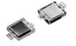
VBPW34S is a common one, but the wavelength of this particular photo diode is not suitable to pickup green light, as can be seen from the data sheet [5].
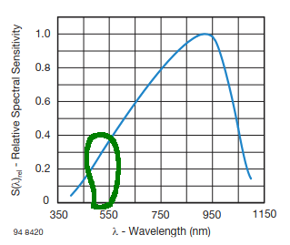
(Image modified, original taken from datasheet [5])
Types of Photodiodes
My leveling laser has a green laser. Green lasers have a wavelength of roughly between 495nm and 550nm. So we need photo diodes that have good sensitivity at that wavelength.
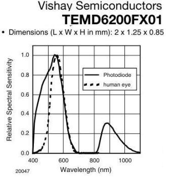
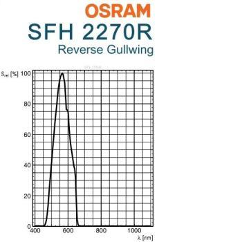
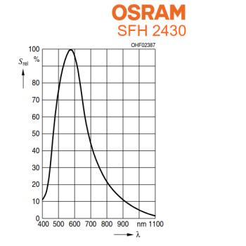
But it’s not just that. The photo diodes need:
- sensitivity at the correct wave length
- needs to be affordable
- readily available
- small in size
- surface mountable
First I had planed to use the vemd5510fx01, but to do availability concerns and a missing footprint in KiCAD I went with sfh2430 photodiodes. These are so common they can be found on eBay.
Sensing Window
The sensing window is the area in which the light from the leveling laser can be detected. Here we need to place the sensors that are then evaluated by the micro-controller.
Area to cover
In order to have a reasonably large “sensing window” with at least 1mm accuracy, the photo diodes need to be creatively placed.
The photodiodes have a width of 4.3mm and height of 3.7mm.
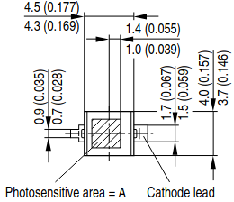
With clever placement, by placing four offset by a quarter and assuming the device is held perfectly straight, we can compute the the height based on which photo diodes receive light and which don’t.
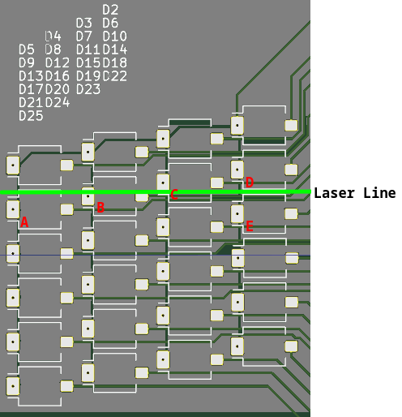
As seen in the image, if the laser line is at the pictured height, then photo diodes A, B, C and not D should read higher values than the rest of the board.
If the line was a millimeter higher D would register a value, but not A. If it was a millimeter lower, then E would register a value.
The disadvantage of this method is that we need to assume the device to be held perfectly perpendicular to the floor, but even when that is not the case, we can apply averaging to the values. The readings would likely be close enough for my purposes.
Microcontroller
Starting out the onboard micro controller might only provide the height measurements to a connected computer via RS-232. A Python script could combine the 2D location with the height measurement. Ideally it would also handle the LIDAR data and compute the 2D map on device.
For this I need a micro controller that has the performance and has a secondary USART for the Lidar RS-232/TTL connection.
The stm32f103c8t6 should be a good fit. I’ve wanted to use it in projects for a long time, but due to the tfqp-48 packaging and the issue of availability of genuine bluepill boards (see lqfp48, it’s not easily possible without custom PCB fabrication which I now have.
Photodiode to Microcontroller
Connecting the photo diodes to the micro controller directly is not feasible for 24 diodes. We would need 24 analog input pins. I want to use analog signals and not threshold the signal to digital 0..1 in hardware as that would require a comparator that would be difficult to calibrate in hardware. I rather record analog values and then compute the threshold dynamically with averaging in software.
The photo diodes could be connected in a multiplexed fashion so save analog digital converters, but the risk and reduced ability to reuse the board for other purposes doesn’t outweigh the cost of the analog digital converters for me. A 24-port analog-digital board is useful for many projects by itself.
Hardware Design
With the above in mind, I started designing a circuit in KiCad. I had a look at some other sponsored submissions of other people to PCBWay and found they are made with KiCAD. I’ve used it in the past, it’s free and open-source and so it is also my tool of choice.
Schematic
In order to get the first schematic done efficiently I looked around for open-source stm32 BluePill type boards made with KiCad. I found this one (see GitHub flamerten/Basic_STM32_Bluepill [1]).
I took over only the schematic, but not the PCB layout and heavily modified it. This way I could be relatively sure that the basic stm32f103 circuitry would work from the start.
Three sections
The schematic is separated into three sections:
- the stm32f103 circuit: it connects to the rest only via SPI - if I need to debug or can’t get it to work, I can still use the board by hand soldering, for instance an ATMega board, to the SPI wires.
- the analog digital converters: I chose not to multiplex the photodiodes, but rather daisy-chain the more expensive 8-channel mcp3008 analog digital converters - if the project fails, I can use the 24 analog inputs for something else, like soil moisture sensing (see Soil Moisture Sensor).
- the photodiode array: 24 photo diodes that have sensitivity in green wavelengths, but are actually ambient light sensors - in case of issues here, they could be removed, rewired or used for other projects.
Pin Headers allow for debugging and reuse
To make modifying connections easy I’ve added a few pin headers:
- for the secondary UART and I2C
- an SPI connection and three chip-select wires to the analog-digital converters
- pin headers for all pins PA0 to PA15 and PB0 to PB15
The pin headers allow me to easily modify connections in early stages of the project. I can easily cut traces and just hand solder jumper wires where I need them.
The secondary UART may be used in the future to connect to the TTL ports of the 360 LIDAR.
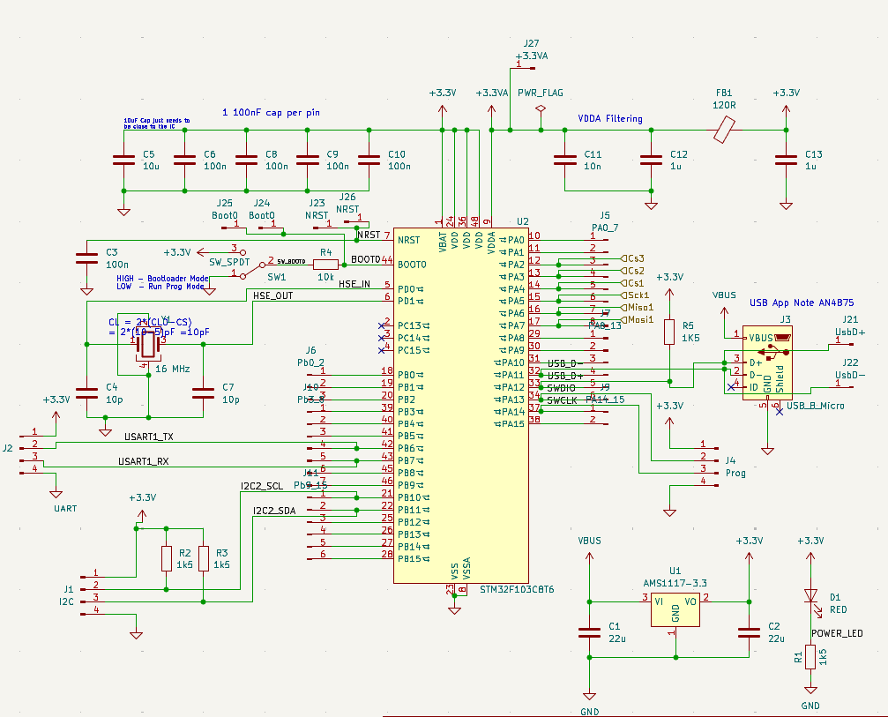
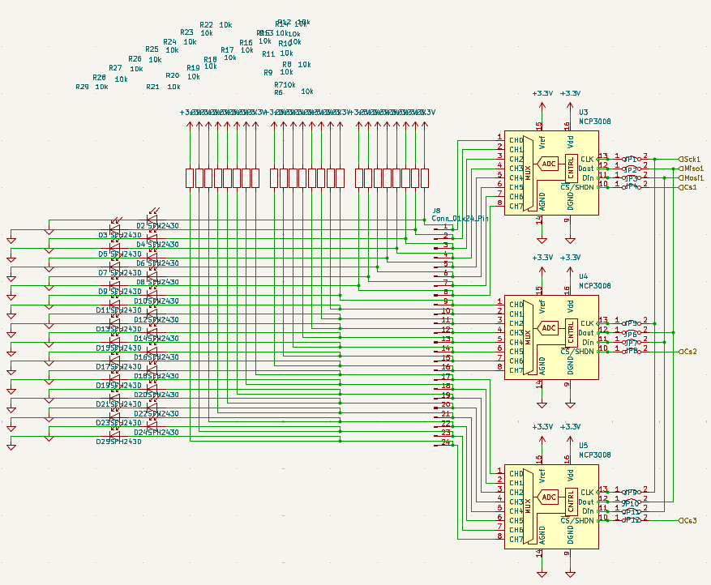
PCB routing
PCB routing took most of the time. Modern tools like KiCad make it as easy as possible, but the process of untangling wires such that they can be routed onto two layers without crossing is still mostly a manual task.
There is a feature in KiCAD to quickly assign footprints to the components in the schematic. This works exceptionally well and makes the process really easy. The table for this is also the basis for the BOM table we will need to submit to the PCB production service. It may make sense to make decisions on the exact manufacturers and part numbers and enter them there.
In the PCB editor of KiCAD there is a menu item up top to “Update PCB from Schematic”. With it we can go back and forth between schematic and PCB until we arrive at a point where the PCB can be routed.
I separated many of the pin arrays into smaller ones to be able to route the wires.
After 1,5 evenings of moving components around I finally arrived at a design I am happy with. I couldn’t place Vias (connections to the other side of the board) on the TFQP-48 package of the stm32f103 chip as it is too small, so I used single pin headers in order to make such connections. These were used primarily for 3.3V lines and GND that tend to need to go all over the place. This way the back of the PCB connects mostly only the single pin headers to one another for 3.3V and GND lines respectively. The front does the rest. This adds the benefit of being able to probe these rather important connections with a multi meter when debugging. If I need to expand the board I can connect to the power lines there.
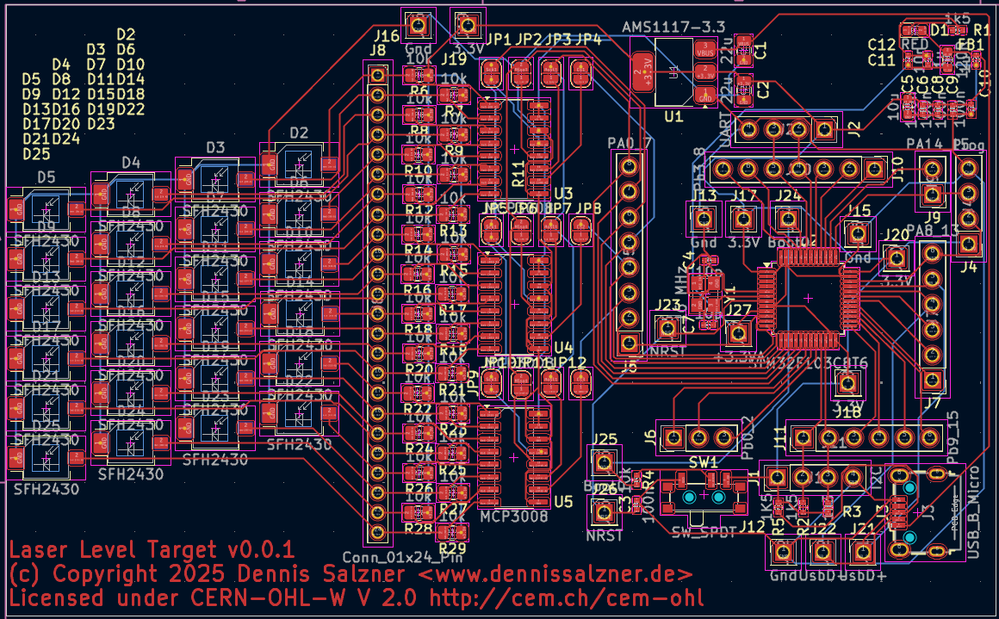
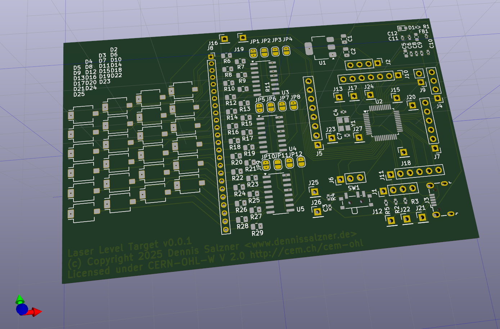
Progress
Conclusion
I’ve submitted the design of the electronic laser target to PCBWay for production. In the next part of the series, when I receive the boards, I will describe the order process with PCBWay and fixes to my design. We will then attempt to bring up the board in the fifth part of the series.
1] https://chaitanyantr.github.io/apriltag.html 1] https://de.wikipedia.org/wiki/Estrich 2] https://electronics.stackexchange.com/questions/218023/laser-detector-parts 3] https://de.wikipedia.org/wiki/Photodiodenzeile 4] https://www.rp-photonics.com/green_lasers.html 5] https://www.vishay.com/docs/81128/vbpw34s.pdf